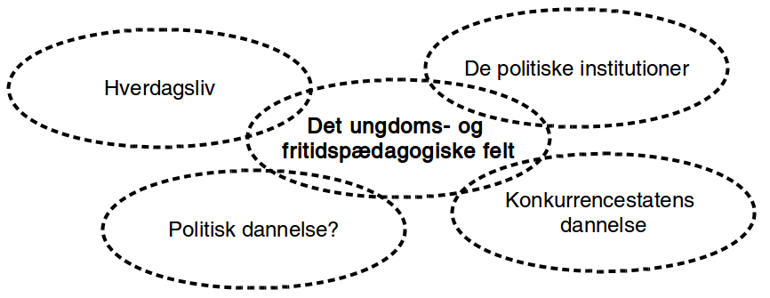
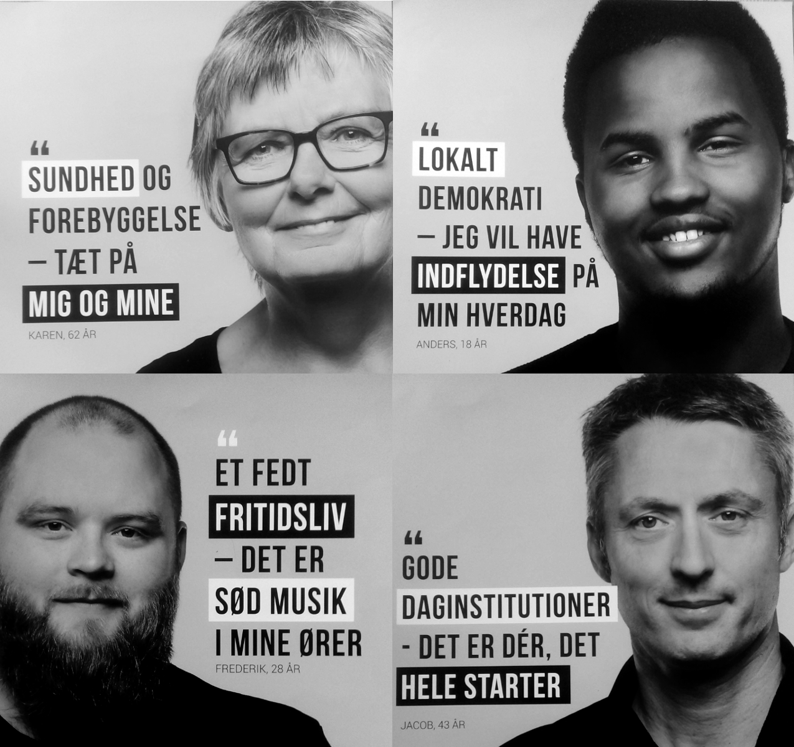

Præsentation af ph.d.-projekt
ErhvervsPhD - hvad er det?

Baggrunden for projektet

Det ungdoms- og fritidspædagogiske felt som brobygger?

Det ungdoms- og fritidspædagogiske felts dannelsesbidrag?

Forskningsspørgsmål
Overordnet spørgsmål
Hvorvidt kan unge og professionelle i det ungdoms- og fritidspædagogiske felt sammen initiere politiske dannelsesprocesser?
Underspørgsmål
- Hvordan er det ungdoms- og fritidspædagogiske felt konstitueret?
- Hvilke politiske dannelsespraksisser foregår der i det ungdoms- og fritidspædagogiske felt?
- Hvordan praktiseres det politiske i de unges livsverden?
- Hvad kan unge og professionelle lære af at deltage i politiske dannelseseksperimenter?
- Hvilke strukturelle drivkræfter og barrierer er der for politisk dannelse?
At iagttage en kommune
Dannelsen af de unge som vælgere
Det gik jo umiddelbart godt…

… men var valgfremme-kampagnnen udtryk for afpolitisering af valgdeltagelse og illegitimering af manglende valgdeltagelse?

Uligheden i valgdeltagelse


Nogle stemmer bag stemmerne
Unges politiske deltagelse som et generaliseret fænomen
Jeg hører tit i fjernsynet, at vi unge ikke interesserer os for politik. Det synes jeg personligt er en kæmpe misforståelse. Stort set alle af mine venner, også mig selv er engageret i politik og bruger lang tid af sin dag på at følge med i, hvad der sker i vores samfund og, hvad man er enig og uenig i.
Hvordan håndteres afmagt?
Hvis du virkelig ikke kan lide politik — hvis du virkelig synes at politikerne er en flok klovne, løgnere, eller at politik er kedeligt - så er det lige præcis derfor, at du skal stemme. Det her er din chance. Din chance for at ændre noget — din chance for at udnytte dit privilegium. Din chance for at udvise optimisme for fremtiden.
Det utilgængelige valg
[...] derfor vil jeg sætte mig ind i alt, hvad kommunalpolitik indebærer, hvilket parti og hvilke personer, der minder mest om mig i mine holdninger og prioriteter. Problemet, der bare hurtigt gik op for mig, at vejledende partiprogrammer og konkrete forslag er noget man skal lede længe efter, og at kommunalpolitik for en nybegynder som mig let kan være ret utilgængeligt.
Mangel på kommunalpolitisk dannelse
Det var først på gymnasiet, at jeg fik indblik i politik, som altså er noget af det væsentligste i det samfund, vi alle er en del af. Men efter kun en kort periodes samfundsfag i gymnasiet, føler jeg mig altså alligevel ikke afklaret med mit politiske ståsted. og er i stor tvivl om, hvordan jeg skal udnytte min langt om længe tildelte chance for demokratisk deltagelse den 21. november.
Opsamling
- Afpolitisering af valgdeltagelse og illegitimering af manglende valgdeltagelse som mulig eksklusion af visse positioner i det politiske rum
- Ulighed i valgdeltagelse viser forskelle i vilkårene for politisk dannelse
- Hvad er målet? En høj valgdeltagelse eller reflekterede borgerere?
Hvordan udforsker vi deltagelsespraksisser i unges hverdagsliv?
Faldgruber i studiet af unges deltagelsespraksisser
Et generaliseret socialt fænomen?
Unge i dagens Danmark er uengagerede og dovne. De gider ikke bruge krudt på politik og tager ikke ansvar for samfundsudviklingen. Det er påstande, vi med jævne mellemrum støder på i den offentlige debat. […] Tværtimod oplever vi en generation af unge, der er ambitiøse og engagerede – og i fuld gang med at involvere sig i samfundet.
Tuborg Fondet, Mandag Morgen og Netværket af Ungdomsråd (2018). Hvem sagde ung og uengageret? Nye perspektiver på unges demokratiske deltagelse
Et dikotomt fænomen?

Jensen, Jakob Linaa (2018). Vejen til demokratisk deltagelse. Danmarks Medie- og Journalisthøjskole
Et fænomen observeret med gamle kategorier?
Variabler vedrørende politisk handling i European Value Survey 1981-2008
Hvordan adresserer vi faldgruberne?
Det foto-eliciterede interview
Styrker:
- De unges perspektiv
- Et indblik i deltagelsespraksissernes kompleksitet
- Bidrager med righoldige fremstillinger af forskellige typer af deltagelsespraksisser
Udfordringer:
- Udvælgelses-bias
- Interviewteknik
- En nål i en høstak
Det samfundsmæssige og politiske aspekt af 'the furry fandom'?

"[Politik] er det der, min far han brokker sig over, som der ikke bliver gjort særlig meget ved og sådan noget. Og jeg synes også, det lyder ikke særlig interessant […]"
"Jeg kan godt lide at gøre det i offentligheden […] der er et eller andet virkelig, virkelig nice ved, at der er et eller andet lille barn, der ser en og bliver rigtig, rigtig glad og vil have krammer og high-five og billede […]"
"[…] jeg tror også, der er nogle af mine andre venner, der har været ude for et eller andet 'ok, det her må du ikke her, fordi siger det her og det her'. Så kan man sige, der hører det jo lidt sammen, men jeg ikke rigtig oplevet det […] Men det kommer sikkert snart, vil jeg tro."